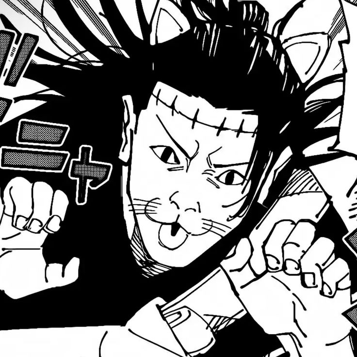
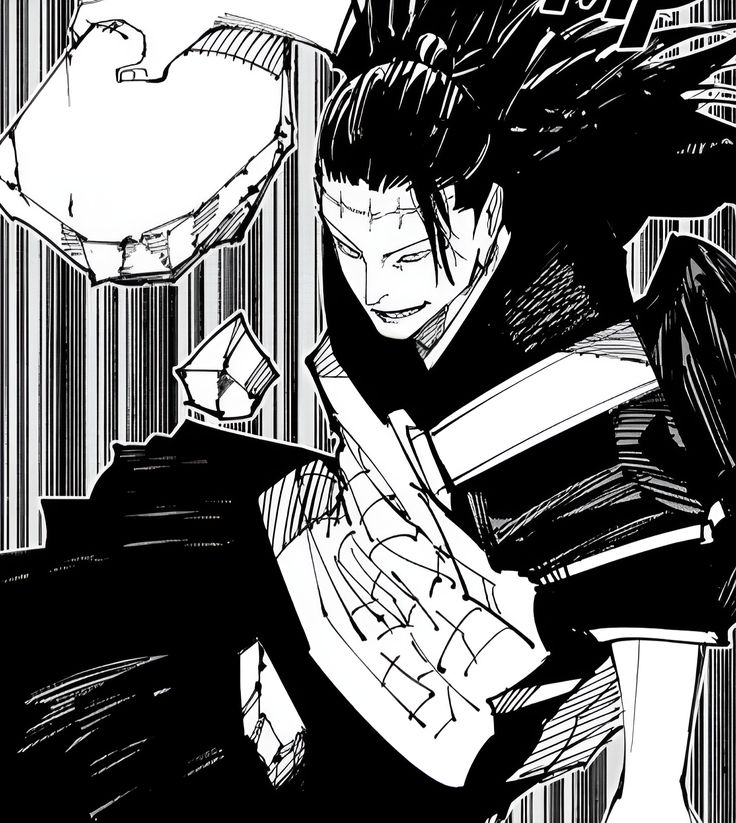

Eu gosto muito do Geto e do Kenjaku como viloes porque os dois passam uma sensacao de inteligencia e perigo o tempo inteiro. O Geto tem um jeito mais ideologico, como se realmente acreditasse no proprio caminho, e isso faz ele ser mais interessante do que um vilao maldoso por ser maldoso. Ja o Kenjaku e ainda mais desconfortavel, porque ele parece estar sempre varios passos a frente de todo mundo, manipulando pessoas e situacoes como se estivesse montando um plano enorme ha muito tempo.

O que me faz gostar deles e justamente essa mistura de carisma, crueldade e inteligencia. Os dois deixam a historia mais pesada e mais imprevisivel, porque quando aparecem da para sentir que alguma coisa muito ruim pode acontecer. Sao personagens que nao dependem so de luta para funcionar: a presenca deles ja causa tensao.
Mais ideologico, carismatico e perigoso justamente por acreditar no proprio discurso.
Mais frio, calculista e perturbador, com a sensacao de que esta sempre manipulando tudo.
Os dois funcionam tanto pela forca quanto pela presenca, estrategia e peso narrativo.
Uma coisa que gosto nessa combinacao e que eles nao passam exatamente a mesma energia. O Geto parece um vilao que convence, enquanto o Kenjaku parece um vilao que observa, espera e executa. Isso cria um contraste muito bom, porque um chama atencao pelo discurso e o outro pelo desconforto.
Eles ajudam a elevar o peso de Jujutsu Kaisen porque sempre parecem ligados a algo maior do que a luta do momento. Quando entram em cena, a historia ganha tensao, politica, trauma e a sensacao de que o mundo do anime esta ficando mais sombrio.